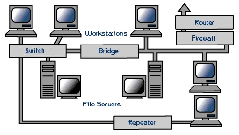
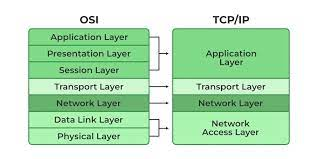
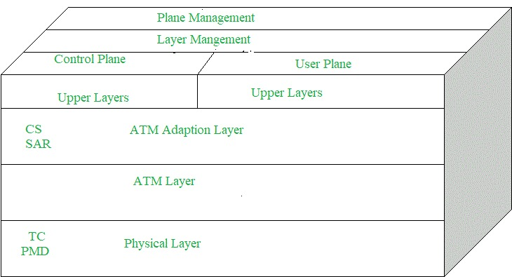
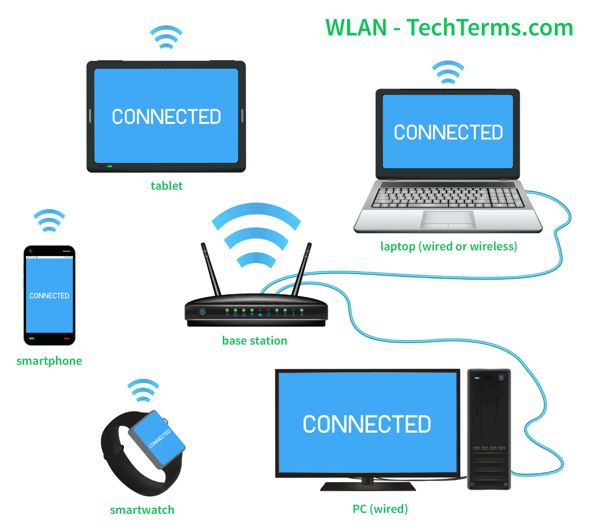
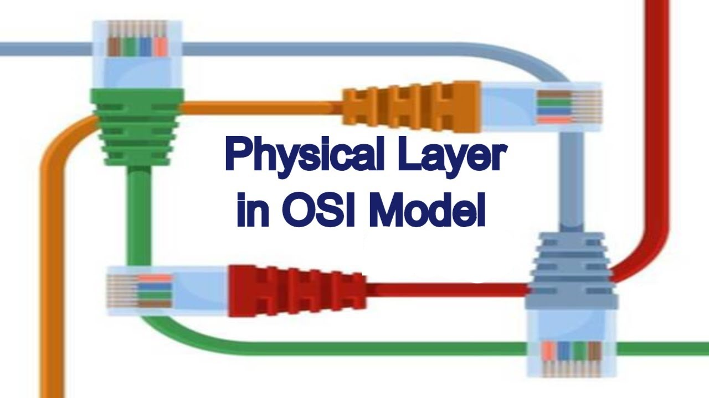
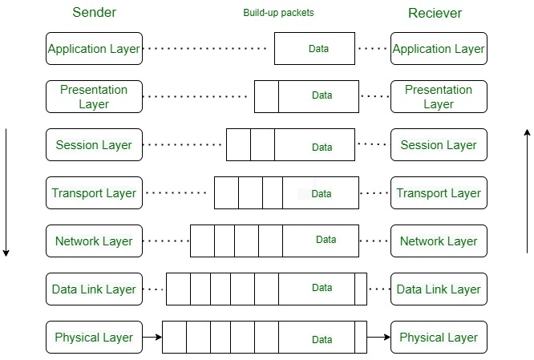

UNIT-1
NETWORK HARDWARE
A computer network is a set of interconnected devices that share data and resources through networking hardware and protocols. Network hardware comprises a set of physical devices that facilitate communication and data exchange between devices connected to the internet. If you work in IT, you can benefit from learning about various types of network hardware and how they enable a network to function effectively. In this article, we answer the question, 'What is network hardware?', list its types, outline its benefits and share best practices to follow when managing network hardware.
.jpeg)
NETWORK HARDWARE
The first computer networks were designed with the hardware as the main
concern and the software as an afterthought. This strategy no longer works. Network software is now highly structured. In the following sections we examine the
software structuring technique in some detail. The approach described here forms
the keystone of the entire book and will occur repeatedly later on.

OSI MODELS
OSI stands for Open System Interconnection is a reference model that describes how information from a software application in one computer moves through a physical medium to the software application in another computer.
OSI consists of seven layers, and each layer performs a particular network function.

TCP/IP MODELS
The OSI Model we just looked at is just a reference/logical model. It was designed to describe the functions of the communication system by dividing the communication procedure into smaller and simpler components.
TCP/IP was designed and developed by the Department of Defense (DoD) in the 1960s and is based on standard protocols. It stands for Transmission Control Protocol/Internet Protocol. The TCP/IP model is a concise version of the OSI model. It contains four layers, unlike the seven layers in the OSI model.

Asynchronous Transfer Mode (ATM):
It is an International Telecommunication Union- Telecommunications Standards Section (ITU-T) efficient for call relay and it transmits all information including multiple service types such as data, video, or voice which is conveyed in small fixed-size packets called cells. Cells are transmitted asynchronously and the network is connection-oriented.

WIRELESS LAN
A wireless LAN (WLAN) is a wireless computer network that connects two or more devices to form a local area network (LAN). WLANs are used in many places, such as homes, schools, offices, and campuses
WLANs use high-frequency radio waves and often include an access point to the internet. An access point is a piece of equipment that acts like a bridge between the wired and wireless worlds. It provides a way for clients to connect to the internet through a wireless network.

PHYSICAL LAYER

The physical Layer is the bottom-most layer in the Open System Interconnection (OSI) Model which is a physical and electrical representation of the system. It consists of various network components such as power plugs, connectors, receivers, cable types, etc. The physical layer sends data bits from one device(s) (like a computer) to another device(s). The physical Layer defines the types of encoding (that is how the 0’s and 1’s are encoded in a signal). The physical Layer is responsible for the communication of the unstructured raw data streams over a physical medium.
Theoretical Basis for Data Communication
The theoretical basis for data communication in computer networks encompasses various principles, models, and protocols that govern how data is transmitted, received, and processed across networked systems. Here are some key theoretical concepts.
Data Transmission:
Transmission Media: Understanding different transmission media (e.g., wired, wireless) and their characteristics (e.g., bandwidth, latency, reliability) is crucial.